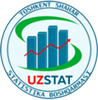

LearningEnglish
Stat
Bosh sahifa
Bosh sahifa
›
...
›
Bo'lim
Yuklanmoqda...
1. Yangi so'zlar
2. Matnni o'qing
🔊 Matnni tinglash
⏹ To'xtatish
Tezlik:
0.5x
0.75x
1x
1.25x
1.5x
3. Tushunishni tekshiring
Javoblarni tekshirish
← Oldingi bo'lim
Keyingi bo'lim →